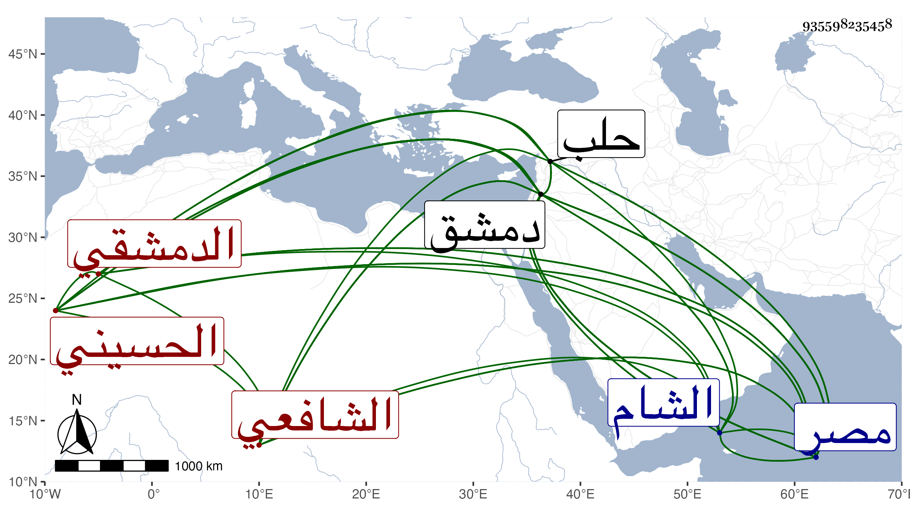

0902Sakhawi.DawLamic.ITO20230111-ara1.EIS1600.935598235458
Biography ID: 935598235458
14
أحمد بن علي بن إبراهيم بن عدنان بن جعفر بن محمد بن عدنان الشهاب أبو العباس بن العلاء الحسيني المنقري الدمشقي الشافعي أخو العماد أبي بكر . ولد في سابع شوال سنة أربع وسبعين وسبعمائة وقيل سنة إحدى بدمشق ونشأ بها فحفظ التنبيه واشتغل في الفقه وشيء من العلوم وسمع الحديث ولكن لم يصرف همته لذلك ولي نظر العذراوية ثم نظر الجامع الأموي في سنة اثنتين وثمانمائة وبعد الفتنة باشر كأبيه وجده نقابة الأشراف بدمشق لما ولي أبوه كتابة السر ، وناب في القضاء عن ابن عباس والأخنائي والزهري ، وولي نظر الجيش لنوروز مدة لطيفة ثم عزل وصودر وأخرجت جهاته ثم استرجعها وولي كتابة السر بدمشق في الأيام المؤيدية سنة عشرين بعد أن ناب عن أبيه فيها فباشر خمس سنين وشهرين ثم استنابه النجم بن حجي في القضاء لما حج أولا وثانيا فلما استقر النجم في كتابة سر مصر استقل هذا بقضاء الشام في الأيام الأشرفية وذلك في جمادى الأولى سنة سبع وعشرين فلما عزل ابن حجي وعاد لمصر حصل بينهما شر كبير أدى لبذل الأموال الجزيلة من كل منهما وعاد النجم للقضاء ورجع السيد لدمشق منفصلا إلى أن استقر في نظر جيشها بعد البدر حسين فدام نحو عشرة أشهر ثم استقر في كتابة سر مصر بعد جلال بن مزهر في منتصف ذي الحجة سنة اثنتين وثلاثين ، وكانت طرحته خضراء برقمات ذهب فباشرها مباشرة حسنة ولم يلبث أن مات مطعونا في ليلة الخميس ثامن عشري جمادى الآخرة من التي بعدها ودفن في تربة الأشرف عند السيد حسن بن عجلان بعد الصلاة عليه بباب الوزير في محفل شهده السلطان ، ولما جاء الخبر لدمشق بوفاته وأخذ أهله في البكاء عليه سقط سقف العزيزية التي كانت تحت نظره . ذكره شيخنا في أنبائه ومعجمه وابن خطيب الناصرية في ذيله لكونه سافر مع نائب دمشق أيام المؤيد إلى حلب وكان من رؤساء بلده ذا حشمة وعقل وتخير وتمول له ثروة جزيلة ومآثر بها حسنة وأملاك كثيرة مع مكارم وأفضال عاريا من الفضائل بحيث يتأسف لذلك ويقول ليتني كنت من أهل العلم ولم يحج ولا عمل من الصالحات التي يذكر بها شيئا وقال شيخنا في معجمه أجاز لأولادي ولم أقف له على سماع طائل إلا إن كان أخذ شيئا عن بعض شيوخنا اتفاقا ، وقال العيني أنه كان مطبوعا بشوشا لكنه متهم بأشياء وقال غيره كانت بيده تداريس وأنظار وهي بباب الجامع القاعة العظيمة المعروفة بقاعة القاضي الفاضل وكذا أثنى عليه المقريزي في عقوده قال عند الله نحتسبه ونسأله أن يلحقه بسلفه الكريم .
